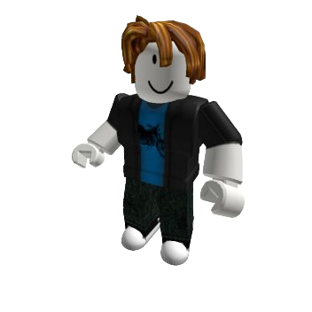

Pelotocino
El pelotocino es un hombre con una chaqueta negra y polo azul con estampado de motocicleta, pantalones de tela de color negro-verde, zapatos negros y blancos, y, lo más importante, Su Pelo de Tocino y, a diferencia de un tocino normal, tiene la piel de otro color. Es una skin predeterminada del juego roblox, te la dan al escoger tu genero como masculino.